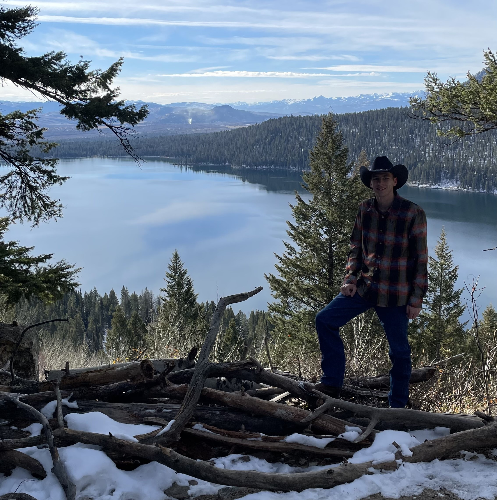

WDD130 About Me Page
Austin Taylor
Howdy Ya'll! My name is Austin Taylor. I am from Houston, Texas and this is my third semester out here in BYUI.
Some things about me include: I love to go on drives, go hiking/exploring, cooking, tinkering with things, playing games (board, card and video), hanging out with friends and family, and I am a movie buff.
I'm also single as a pringle, so don't be afraid to give me a jingle (call)!
También hablo español y lo aprendí cuando fui a mi misión en Panamá.
I'm a Data Science major with a minor in Computer Science.